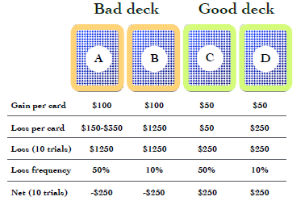
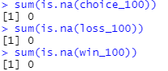

Introduction¶
The Iowa Gambling task [Bechara et al., 1994] assess real-life decision making. Developed by researchers at the University of Iowa, subjects participate in a simulated card game. Participants start with $2,000 and are presented with four card decks (A - D), with each deck more likely to yield monetary rewards or penalties over time i.e. some decks are “bad” while others are “good”. Below, A and B are considered “bad” as they have a negative expected value, while C and D are considered “good” as they are associated with a positive expected value. Test-takers obtain feedback on the amount lost or gained and the running total after each choice (trail). The subject’s goal is to adapt their pattern of choices to maximize the reward received.

In standard setups, the task typically lasts 100 trials. Empirical Investigations have shown that healthy (neurotypical) test-takers generally become aware of the “good” and “bad” decks after 20 to 40 trials [Weller et al., 2010]. However, patients who suffer from orbitofrontal cortex (OFC) dysfunction tend to continue choosing bad decks even though the realization of continued monetary loss may have already occurred in these participants. As presented above, participants must choose advantageous long-term choices over favourable short-term picks to achieve the greatest end monetary gain. Therefore, IGT remains a popular choice to evaluate decision making and, by extension, impulsivity as it does not suffer from the self-reflection biases that questionnaires tend to display.
Description of Datasets¶
This investigation utilizes a dataset from a “many labs” initiative on the Iowa Gambling task, grouping ten studies and containing data from 617 healthy participants [Steingroever et al., 2015]. The data consist of the choices of each participant on each trial and the resulting rewards and losses.
Note
Not all studies had the same number of trials. The number of trails varied from 95, 100 and 150.
The table below summarizes the multiple datasets used in this investigation.
Labs |
Number of Participants |
Trails |
|---|---|---|
Fridberg et al. [2010] |
15 |
95 |
Horstmann et al. [2012] |
162 |
100 |
Kjome et al. [2010] |
19 |
100 |
Maia and McClelland [2004] |
40 |
100 |
Premkumar et al. [2008] |
25 |
100 |
Steingroever et al. [2011] |
70 |
100 |
Steingroever et al. [2011] |
57 |
150 |
Wetzels et al. [2010] |
41 |
150 |
Wood et al. [2005] |
153 |
100 |
Worthy et al. [2013] |
35 |
100 |
For further clarification of the different IGT versions used, please consult this paper. In addition, an explanation of these datasets is provided in the Initial Data Exploration Section.
In this investigation, we seek to use a variety of clustering approaches to segment the participants into well-defined groups. To start, we perform an initial data exploration to perform transformations & data sanitization checks; acquire rudimentary statistics of the datasets; perform data augmentation; create exploratory visualizations. Next, we perform cluster analysis and evaluate our clusters using metrics such as Silhouette Coefficient and an Elbow curve. These clusters represent participants that exhibit similar decision-making patterns and may have similar underlying psychological qualities such as impulsivity, stress reaction level to punishments or similar learnt experiences. Next, we attempt to form a federated k-means algorithm to preserve the privacy of the individual labs. Finally, we conclude with the most important outcomes of our work.
Initial Data Exploration¶
The purpose of our initial data exploration is to:
- Check the validity of the data and perform data cleaning methods if needed.
- View the statistical details of the data
- Add additional data from the {cite:t}`ahn2014decision` study as we are interested in clustering unhealthy individuals
- Perform data visualization to improve our understanding of the data
- Feature Engineer
- Perform transformations (standardization, PCA)
If you are viewing this as an HTML page, please use the content toolbar to the right for quick access to different sections.
Importing required libraries¶
Data processing
import pandas as pd
from sklearn.preprocessing import StandardScaler
from sklearn.decomposition import PCA
import numpy as np
Data Visualization
import matplotlib.pyplot as plt
import seaborn as sns
For the purposes of this exploration, we load in 12 different CSV files.
Type |
File Name |
Description |
|---|---|---|
Choices |
choices_95.csv, choices_100.csv, choices_150.csv |
These CSV’s contains all of the choices made by test-takers during the examined studies. Note, the ten studies described in the Introduction section are grouped by the number of trails. The integer suffix of the file name indicates the number of trials performed. For example, the 1st row and 2nd column instance of the choices_95.csv file describes a participant’s 2nd card choice in a 95 trail study. |
Wins |
wi_95.csv, wi_100.csv, wi_150.csv |
These datasets describe the wins received by participants in 95, 100 and 150 trail investigations, as indicated by the suffix. For example, the 3rd row and 5th column entry of the wi_100.csv file details the monetary gain received by a participant on their 5th choice in 100 trail study. |
Losses |
lo_95.csv, lo_100.csv, lo_150.csv |
These files contain the losses received by participants in 95, 100 and 150 trail investigations, as indicated by the suffix. For example, the 2nd row and 8th column entry of the lo_150.csv file details the monetary penalty received by a participant on their 8th choice in 150 trail study. |
Index |
index_95.csv, index_100.csv, index_150.csv |
index_95.csv, index_100.csv, and index_150.csv map the first author of the study that reports the data to the corresponding subject. |
choice_95 = pd.read_csv('data/choice_95.csv')
choice_100 = pd.read_csv('data/choice_100.csv')
choice_150 = pd.read_csv('data/choice_150.csv')
win_95 = pd.read_csv('data/wi_95.csv')
win_100 = pd.read_csv('data/wi_100.csv')
win_150 = pd.read_csv('data/wi_150.csv')
loss_95 = pd.read_csv('data/lo_95.csv')
loss_100 = pd.read_csv('data/lo_100.csv')
loss_150 = pd.read_csv('data/lo_150.csv')
index_95 = pd.read_csv('data/index_95.csv')
index_100 = pd.read_csv('data/index_100.csv')
index_150 = pd.read_csv('data/index_150.csv')
Currently, the dataframes have columns in the following name format: <Description>_<Trial number> as indicated down below.
print(f'Win dataframes have the following name format: {", ".join(list(win_100.columns[:3]))}')
print(f'Loss dataframes have the following name format: {", ".join(list(loss_100.columns[:3]))}')
print(f'Choice dataframes have the following name format: {", ".join(list(choice_100.columns[:3]))}')
Win dataframes have the following name format: Wins_1, Wins_2, Wins_3
Loss dataframes have the following name format: Losses_1, Losses_2, Losses_3
Choice dataframes have the following name format: Choice_1, Choice_2, Choice_3
For uniformity, we will replace the column names to have a Trial_<Trial number> format as the dataframe variable names already indicates functionality.
column_names = [f'trial_{num}' for num in range(1,96)]
choice_95.columns = win_95.columns = loss_95.columns = column_names
column_names.extend([f'trial_{num}' for num in range(96,101)])
choice_100.columns = win_100.columns = loss_100.columns = column_names
column_names.extend([f'trial_{num}' for num in range(101,151)])
choice_150.columns = win_150.columns = loss_150.columns = column_names
win_95.head(5)
| trial_1 | trial_2 | trial_3 | trial_4 | trial_5 | trial_6 | trial_7 | trial_8 | trial_9 | trial_10 | ... | trial_86 | trial_87 | trial_88 | trial_89 | trial_90 | trial_91 | trial_92 | trial_93 | trial_94 | trial_95 | |
|---|---|---|---|---|---|---|---|---|---|---|---|---|---|---|---|---|---|---|---|---|---|
| Subj_1 | 100 | 100 | 100 | 100 | 100 | 100 | 100 | 100 | 100 | 100 | ... | 50 | 50 | 50 | 50 | 50 | 50 | 50 | 50 | 50 | 50 |
| Subj_2 | 100 | 100 | 50 | 100 | 100 | 100 | 100 | 100 | 100 | 100 | ... | 50 | 100 | 100 | 100 | 100 | 100 | 50 | 50 | 50 | 50 |
| Subj_3 | 50 | 50 | 50 | 100 | 100 | 100 | 100 | 100 | 100 | 100 | ... | 100 | 100 | 100 | 50 | 50 | 50 | 50 | 50 | 50 | 50 |
| Subj_4 | 50 | 50 | 100 | 100 | 100 | 100 | 100 | 50 | 100 | 100 | ... | 100 | 50 | 50 | 50 | 50 | 50 | 50 | 50 | 50 | 50 |
| Subj_5 | 100 | 100 | 50 | 50 | 50 | 100 | 100 | 100 | 100 | 100 | ... | 50 | 50 | 50 | 50 | 50 | 50 | 50 | 50 | 50 | 50 |
5 rows × 95 columns
Data Cleaning¶
Check for null values
print(f'Does choice_95 contain any null values? {choice_95.isnull().any().any()}')
print(f'Does choice_100 contain any null values? {choice_100.isnull().any().any()}')
print(f'Does choice_150 contain any null values? {choice_150.isnull().any().any()}')
Does choice_95 contain any null values? False
Does choice_100 contain any null values? False
Does choice_150 contain any null values? False
print(f'Does win_95 contain any null values? {win_95.isnull().any().any()}')
print(f'Does win_100 contain any null values? {win_100.isnull().any().any()}')
print(f'Does win_150 contain any null values? {win_150.isnull().any().any()}')
Does win_95 contain any null values? False
Does win_100 contain any null values? False
Does win_150 contain any null values? False
print(f'Does choice_95 contain any null values? {loss_95.isnull().any().any()}')
print(f'Does choice_100 contain any null values? {loss_100.isnull().any().any()}')
print(f'Does choice_150 contain any null values? {loss_150.isnull().any().any()}')
Does choice_95 contain any null values? False
Does choice_100 contain any null values? False
Does choice_150 contain any null values? False
print(f'Does index_95 contain any null values? {index_95.isnull().values.any()}')
print(f'Does index_100 contain any null values? {index_100.isnull().values.any()}')
print(f'Does index_150 contain any null values? {index_150.isnull().values.any()}')
Does index_95 contain any null values? False
Does index_100 contain any null values? False
Does index_150 contain any null values? False
This finding seems to contradict the original ‘many labs’ paper. They suggest that there should be missing data present in the 100 trial dataframes due to incompletely received datasets (i.e., missing data for one participant in Kjome et al. study, and for two participants in Wood et al. study). However, they use the word ‘might’, so this may have been rectified since then. We also further validated this assumption by using the R programming language as the organizers provided the datasets in the rdata format. The below screenshot confirms my assumption that no missing values are present.

Next, we calculate the basic statistics of each data set. This is a trivial step, and it is designed to increase understanding of the problem.
# choice dataframes
for trial_num in [95, 100, 150]:
print(f'choice_{trial_num} basic statistics')
print(globals()[f'choice_{trial_num}'].describe().iloc[:,:4])
print('\n')
choice_95 basic statistics
trial_1 trial_2 trial_3 trial_4
count 15.000000 15.000000 15.000000 15.000000
mean 2.133333 2.333333 2.466667 2.600000
std 1.355764 0.816497 1.060099 1.183216
min 1.000000 1.000000 1.000000 1.000000
25% 1.000000 2.000000 1.500000 2.000000
50% 1.000000 2.000000 3.000000 2.000000
75% 3.500000 2.500000 3.000000 4.000000
max 4.000000 4.000000 4.000000 4.000000
choice_100 basic statistics
trial_1 trial_2 trial_3 trial_4
count 504.000000 504.000000 504.000000 504.000000
mean 2.142857 2.416667 2.337302 2.434524
std 1.099172 1.092628 1.090952 1.138377
min 1.000000 1.000000 1.000000 1.000000
25% 1.000000 1.000000 1.000000 1.000000
50% 2.000000 2.000000 2.000000 2.000000
75% 3.000000 3.000000 3.000000 4.000000
max 4.000000 4.000000 4.000000 4.000000
choice_150 basic statistics
trial_1 trial_2 trial_3 trial_4
count 98.000000 98.000000 98.000000 98.000000
mean 2.795918 2.663265 2.469388 2.561224
std 1.044960 1.083559 1.168346 1.175930
min 1.000000 1.000000 1.000000 1.000000
25% 2.000000 2.000000 1.000000 1.250000
50% 3.000000 3.000000 2.000000 3.000000
75% 4.000000 4.000000 4.000000 4.000000
max 4.000000 4.000000 4.000000 4.000000
# win dataframes
for trial_num in [95, 100, 150]:
print(f'win_{trial_num} basic statistics')
print(globals()[f'win_{trial_num}'].describe().iloc[:,:4])
print('\n')
win_95 basic statistics
trial_1 trial_2 trial_3 trial_4
count 15.000000 15.000000 15.000000 15.000000
mean 80.000000 86.666667 70.000000 76.666667
std 25.354628 22.886885 25.354628 25.819889
min 50.000000 50.000000 50.000000 50.000000
25% 50.000000 75.000000 50.000000 50.000000
50% 100.000000 100.000000 50.000000 100.000000
75% 100.000000 100.000000 100.000000 100.000000
max 100.000000 100.000000 100.000000 100.000000
win_100 basic statistics
trial_1 trial_2 trial_3 trial_4
count 504.000000 504.000000 504.000000 504.000000
mean 81.646825 77.956349 76.636905 77.172619
std 24.124146 26.566060 25.105129 25.387493
min 50.000000 40.000000 40.000000 40.000000
25% 50.000000 50.000000 50.000000 50.000000
50% 100.000000 100.000000 80.000000 90.000000
75% 100.000000 100.000000 100.000000 100.000000
max 100.000000 120.000000 120.000000 120.000000
win_150 basic statistics
trial_1 trial_2 trial_3 trial_4
count 98.000000 98.000000 98.000000 98.000000
mean 68.877551 72.959184 75.510204 74.489796
std 24.363343 25.044669 25.123302 25.123302
min 50.000000 50.000000 50.000000 50.000000
25% 50.000000 50.000000 50.000000 50.000000
50% 50.000000 50.000000 100.000000 50.000000
75% 100.000000 100.000000 100.000000 100.000000
max 100.000000 100.000000 100.000000 100.000000
# loss dataframes
for trial_num in [95, 100, 150]:
print(f'loss_{trial_num} basic statistics')
print(globals()[f'loss_{trial_num}'].describe().iloc[:,:4])
print('\n')
loss_95 basic statistics
trial_1 trial_2 trial_3 trial_4
count 15.0 15.0 15.000000 15.0
mean 0.0 0.0 -3.333333 0.0
std 0.0 0.0 12.909944 0.0
min 0.0 0.0 -50.000000 0.0
25% 0.0 0.0 0.000000 0.0
50% 0.0 0.0 0.000000 0.0
75% 0.0 0.0 0.000000 0.0
max 0.0 0.0 0.000000 0.0
loss_100 basic statistics
trial_1 trial_2 trial_3 trial_4
count 504.000000 504.000000 504.000000 504.000000
mean -37.301587 -40.376984 -64.682540 -39.384921
std 149.610031 175.942949 192.871723 152.257429
min -1250.000000 -1250.000000 -1250.000000 -1250.000000
25% 0.000000 0.000000 -50.000000 0.000000
50% 0.000000 0.000000 0.000000 0.000000
75% 0.000000 0.000000 0.000000 0.000000
max 0.000000 0.000000 0.000000 0.000000
loss_150 basic statistics
trial_1 trial_2 trial_3 trial_4
count 98.000000 98.000000 98.000000 98.000000
mean -33.673469 -64.795918 -81.122449 -88.775510
std 75.905364 191.872109 227.323661 255.509458
min -350.000000 -1250.000000 -1250.000000 -1250.000000
25% -50.000000 -50.000000 -50.000000 -50.000000
50% 0.000000 0.000000 0.000000 0.000000
75% 0.000000 0.000000 0.000000 0.000000
max 0.000000 0.000000 0.000000 0.000000
Data Augmentation¶
We are interested in how healthy vs unhealthy individuals will cluster. To this end, we include data from a study conducted by Ahn et al. [2014]. This dataset contains 48 healthy controls, 43 pure heroin and 38 pure amphetamine users.
Now, we perform the necessary processing steps to ‘pivot’ the new data so that it resembles the already created dataframes. Unfortunately not every subject had data present for all of the 100 trials. If a subject had incomplete data, they were removed from this investigation. As a result, we removed 1 healthy individual, 1 individual who takes heroin and 2 individuals who take amphetamine.
def remove_incomplete_subjects(ahn_df):
"""
If a subject does not have data for ALL 100 trials
remove them
:param ahn_df: pandas dataframe in a format devised
by Ahn et al.
"""
for subject in ahn_df["subjID"].unique():
subject_df = ahn_df[ahn_df["subjID"] == subject]
if subject_df['trial'].values.tolist() != list(range(1,101)):
ahn_df = ahn_df[ahn_df["subjID"] != subject]
return ahn_df
ahn_healthy_100 = pd.read_csv('data/IGTdata_healthy_control.txt', sep="\t")
ahn_heroin_100 = pd.read_csv('data/IGTdata_heroin.txt', sep="\t")
ahn_amphetamine_100 = pd.read_csv('data/IGTdata_amphetamine.txt', sep="\t")
ahn_healthy_100 = remove_incomplete_subjects(ahn_healthy_100)
ahn_heroin_100 = remove_incomplete_subjects(ahn_heroin_100)
ahn_amphetamine_100 = remove_incomplete_subjects(ahn_amphetamine_100)
assert ahn_healthy_100["subjID"].nunique() == 47
assert ahn_heroin_100["subjID"].nunique() == 42
assert ahn_amphetamine_100["subjID"].nunique() == 36
Down below, we define two helper functions that pivot and concat data.
def pivot_ahn_to_many_labs(org_df, health_status, selection_type):
"""
Pivots a dataframe present in format devised by Ahn et al. to
one devised by the authors of the many labs initiative
:param org_dataframe: pandas dataframe in a format devised
by Ahn et al.
:param health_status: a variable detailing whether the subject is
healthy, or takes heroin/amphetamine.
:param selection_type: selection type decides do we want choices,
wins or losses of the particpants.
options:
deck -> choices
gain -> wins
losses -> losses
"""
new_dataframe = org_df.pivot(
index='subjID', columns='trial').rename_axis(None, axis=0)[selection_type].rename_axis(None, axis=1)
new_dataframe = new_dataframe.add_prefix('trial_')
new_dataframe.insert(0,'health status', health_status)
new_dataframe.insert(0,'study','Ahn')
return new_dataframe
def concat_ahn_to_many_labs( many_labs_df, ahn_healthy_df, ahn_heroin_df, ahn_amphetamine_df):
"""
Concats a 100 trial 'many labs' dataframe with the dataframes provided by Ahn et al.
Also, maps the health status('healthy') and the study's first author to each particpant
of a many labs dataset.
:param many_labs_df: Dataframe containing data from the many labs paper
:param ahn_healthy_df: Contains the healthy individuals of the Ahn et al study
:param ahn_heroin_df: Contains the individuals who take heroin (Ahn et al. study)
:param ahn_heroin_df: Contains the individuals who take amphetamines (Ahn et al, study)
"""
many_labs_df.insert(0,'health status', 'healthy')
many_labs_df.insert(0, 'study', index_100['Study'].values)
concated_df = pd.concat([
many_labs_df, ahn_healthy_df, ahn_heroin_df, ahn_amphetamine_df
], ignore_index=True)
return concated_df
Next, we pivot the Ahn et al. data so that it follows the many labs format i.e. split by choice, win or loss.
The variable name of the pivoted datasets have the form:ahn_{health_status}_{selection_type}_100
ahn_healthy_choice_100 = pivot_ahn_to_many_labs(ahn_healthy_100, 'healthy', 'deck')
ahn_heroin_choice_100 = pivot_ahn_to_many_labs(ahn_heroin_100, 'heroin', 'deck')
ahn_amphetamine_choice_100 = pivot_ahn_to_many_labs(ahn_amphetamine_100, 'amphetamine', 'deck')
ahn_healthy_win_100 = pivot_ahn_to_many_labs(ahn_healthy_100, 'healthy', 'gain')
ahn_heroin_win_100 = pivot_ahn_to_many_labs(ahn_heroin_100, 'heroin', 'gain')
ahn_amphetamine_win_100 = pivot_ahn_to_many_labs(ahn_amphetamine_100, 'amphetamine', 'gain')
ahn_healthy_loss_100 = pivot_ahn_to_many_labs(ahn_healthy_100, 'healthy', 'loss')
ahn_heroin_loss_100 = pivot_ahn_to_many_labs(ahn_heroin_100, 'heroin', 'loss')
ahn_amphetamine_loss_100 = pivot_ahn_to_many_labs(ahn_amphetamine_100, 'amphetamine', 'loss')
ahn_healthy_choice_100.head(5)
| study | health status | trial_1 | trial_2 | trial_3 | trial_4 | trial_5 | trial_6 | trial_7 | trial_8 | ... | trial_91 | trial_92 | trial_93 | trial_94 | trial_95 | trial_96 | trial_97 | trial_98 | trial_99 | trial_100 | |
|---|---|---|---|---|---|---|---|---|---|---|---|---|---|---|---|---|---|---|---|---|---|
| 103 | Ahn | healthy | 3 | 3 | 3 | 4 | 3 | 1 | 1 | 2 | ... | 4 | 4 | 4 | 4 | 4 | 4 | 4 | 4 | 4 | 4 |
| 104 | Ahn | healthy | 1 | 2 | 3 | 4 | 2 | 3 | 1 | 1 | ... | 2 | 4 | 4 | 2 | 4 | 2 | 4 | 2 | 4 | 2 |
| 114 | Ahn | healthy | 2 | 1 | 2 | 4 | 4 | 2 | 2 | 1 | ... | 4 | 2 | 4 | 4 | 2 | 2 | 4 | 2 | 4 | 4 |
| 115 | Ahn | healthy | 1 | 3 | 3 | 4 | 3 | 4 | 2 | 4 | ... | 1 | 4 | 4 | 4 | 3 | 1 | 3 | 4 | 4 | 3 |
| 116 | Ahn | healthy | 3 | 2 | 1 | 4 | 4 | 3 | 2 | 1 | ... | 3 | 3 | 1 | 1 | 2 | 3 | 3 | 4 | 2 | 2 |
5 rows × 102 columns
We concat the many_labs dataframe with the dataframes provided by Ahn et al. for each type (i.e. choice, win or loss).
total_choice_100 = concat_ahn_to_many_labs(choice_100,ahn_healthy_choice_100, ahn_heroin_choice_100, ahn_amphetamine_choice_100)
total_win_100 = concat_ahn_to_many_labs(win_100,ahn_healthy_win_100, ahn_heroin_win_100, ahn_amphetamine_win_100)
total_loss_100 = concat_ahn_to_many_labs(loss_100,ahn_healthy_loss_100, ahn_heroin_loss_100, ahn_amphetamine_loss_100)
total_choice_100.head(5)
| study | health status | trial_1 | trial_2 | trial_3 | trial_4 | trial_5 | trial_6 | trial_7 | trial_8 | ... | trial_91 | trial_92 | trial_93 | trial_94 | trial_95 | trial_96 | trial_97 | trial_98 | trial_99 | trial_100 | |
|---|---|---|---|---|---|---|---|---|---|---|---|---|---|---|---|---|---|---|---|---|---|
| 0 | Horstmann | healthy | 1 | 1 | 2 | 4 | 3 | 2 | 1 | 2 | ... | 1 | 1 | 1 | 2 | 2 | 2 | 4 | 2 | 4 | 2 |
| 1 | Horstmann | healthy | 2 | 1 | 4 | 4 | 3 | 2 | 3 | 2 | ... | 4 | 2 | 3 | 4 | 2 | 4 | 4 | 2 | 2 | 4 |
| 2 | Horstmann | healthy | 4 | 2 | 3 | 1 | 4 | 2 | 4 | 4 | ... | 3 | 2 | 1 | 4 | 2 | 2 | 2 | 4 | 2 | 2 |
| 3 | Horstmann | healthy | 4 | 3 | 4 | 2 | 1 | 4 | 3 | 2 | ... | 4 | 2 | 3 | 4 | 3 | 4 | 1 | 4 | 3 | 4 |
| 4 | Horstmann | healthy | 1 | 2 | 2 | 2 | 2 | 3 | 4 | 1 | ... | 2 | 2 | 2 | 2 | 3 | 3 | 3 | 3 | 4 | 4 |
5 rows × 102 columns
The next two cells map the health status(‘healthy’) and study’s first author to each subject in the 95 and 150 trial studies. Note, this was completed for 100 trial studies above in the pivot_ahn_to_many_labs() function .
choice_95.insert(0,'health status', 'healthy')
choice_95.insert(0, 'study', index_95['Study'].values)
win_95.insert(0,'health status', 'healthy')
win_95.insert(0, 'study', index_95['Study'].values)
loss_95.insert(0,'health status', 'healthy')
loss_95.insert(0, 'study', index_95['Study'].values)
choice_150.insert(0,'health status', 'healthy')
choice_150.insert(0, 'study', index_150['Study'].values)
win_150.insert(0,'health status', 'healthy')
win_150.insert(0, 'study', index_150['Study'].values)
loss_150.insert(0,'health status', 'healthy')
loss_150.insert(0, 'study', index_150['Study'].values)
The cumulative reward is commonly used to evaluate reinforcement learning models (RLM). This metric stems from the idea of how humans learn through interaction. RLMs attempt to be a computational approach of the same mechanism:
A agent receives state \(S_{0}\) from the environment (In this case, the agent received the four decks of cards, “untouched”).
Based on the \(S_{0}\), the agent takes an action \(A_{0}\) (our agent will pick a card from deck A, B, C, or D).
Environment transitions to a new state \(S_{1}\) (our agent is present with the same deck of cards, albeit their first choice is absent).
Environment gives some reward \(R_{1}\) to the agent.
Therefore, Cumulative reward at trial t can be defined as:
In the same respect, we attempt to plot the cumulative reward (total) for the participants surveyed. However, given the large number of participants available, it is infeasible to plot for every subject. Therefore, we will group participants by study. When plotting, the average cumulative total at trial T for a study of N participants will be calculated as follows:
Where W denotes the win and L denotes the loss. W is a positive integer number, whilst L is a negative integer.
The following code cells perform the data processing steps required to produce the visualizations. Asserts are used to test that the transformation has been performed correctly.
def get_cumulative_reward(win_df, loss_df):
"""
Retrives the cumulative reward dataframe for each subject of a study.
Also, sets a globals 'rewards' variable which
holds the reward at each trial for every subject of a study.
:param win_df: contain the wins received by participants
:param loss_df: contain the loses received by participants
"""
trial_num = len(win_df.columns.values) - 2
# Set a 'reward global variable', used later on in PCA
globals()[f'rewards_{trial_num}'] = win_df.iloc[:,2:].add(loss_df.iloc[:,2:])
cum_reward = globals()[f'rewards_{trial_num}'].cumsum(axis=1)
cum_reward = pd.merge(
win_df.iloc[:,:2], cum_reward, left_index=True, right_index=True
)
globals()[f'rewards_{trial_num}'].insert(0,'health status', win_df.iloc[:,1])
globals()[f'rewards_{trial_num}'].insert(0, 'study', win_df.iloc[:,0])
return cum_reward
cum_reward_95 = get_cumulative_reward(win_95,loss_95)
assert cum_reward_95.iloc[0,10] == -350
assert cum_reward_95.iloc[11, 8] == 500
assert cum_reward_95.iloc[8,69] == -450
cum_reward_100 = get_cumulative_reward(total_win_100, total_loss_100)
assert cum_reward_100.iloc[3, 11] == -1000
assert cum_reward_100.iloc[499, 100] == 25
assert cum_reward_100.iloc[2, 94] == -1050
cum_reward_150 = get_cumulative_reward(win_150, loss_150)
assert cum_reward_150.iloc[4,144] == 1800
assert cum_reward_150.iloc[93, 10] == 300
def visualize_cumulative_reward_by_study(cum_reward_df):
"""
visualize the cumulative reward dataframe grouped by study.
:param cum_reward_df: contain the cumulative rewards by participants in 'X' trial studies
where 'X' can be 95,100 and 150
"""
sum_cum_reward_df = cum_reward_df.groupby(['study']).sum()
trial_num = len(sum_cum_reward_df.columns.values)
sum_cum_reward_df = sum_cum_reward_df.div(trial_num)
sns.set(style='darkgrid')
for study in sum_cum_reward_df.index:
end_value, colour = sum_cum_reward_df[f'trial_{trial_num}'].loc[study], 'red'
if end_value > 0:
colour ='green'
fig = sns.lineplot(
x=list(range(1, trial_num + 1)), y =sum_cum_reward_df.loc[study].values.tolist(), color=colour
)
plt.xlabel("Trials")
plt.ylabel("Culmatative reward ($)")
plt.title(f"{''.join(study)} study ({trial_num} trials, {len(cum_reward_df[cum_reward_df['study'] == study])} participants)")
plt.show(fig)
Visualizations of the average sum of the cumulative rewards, grouped by a ‘many labs’ study. Note, a green line indicates a positive end value where as a red line indicates a negative end value i.e. take home pay. Initially,we concluded that some data transformations incorrectly as our pre-conceptions were not met but ad-hoc analysis revealed no errors. However as Bull et al. [2015] notes “researchers have observed high inter-study and inter-individual variability
in IGT performance in healthy participants.”. According to [Bechara et al., 1994]. healthy subjects should gradually learn to choose an approximately equal number of cards from decks C and D and avoid cards from decks A and B, assuming that they focus on the long-term monetary outcome i.e. the largest take home award . Although Steingroever2011 and Wetzel follow this trend, the other studies do not. This confirms our hypothesis that healthy subjects do not exclusively focus on the long-term outcome. Instead, subjects predominantly consider a combination of gain and loss frequency choices and may be influenced by psychological differences such as impulsivity or propensity to gambling.
visualize_cumulative_reward_by_study(cum_reward_95)
visualize_cumulative_reward_by_study(cum_reward_100[cum_reward_100['study'] != 'Ahn'])


visualize_cumulative_reward_by_study(cum_reward_150)


A common held belief is that people who suffer from subsistence issues exhibit decision-making deficits. These results seem to confirm this as we observed the second lowest average cumulative reward at the end trial (i.e take home award). However, although both types of substance users exhibit similar behaviour (i.e. an initial surge followed by a decline by choosing the “bad cards”) the average heroin user tends to perform more poorly when compared to an amphetamine user. Different classes of drugs, such as stimulants and opiates might have different degree of impairment on the decision making progress. For example, pre-cinical trails conduced by Stewart et al. [1984] describe notable differences between stimulants and opiates, which exert fundamentally different behavioral effects, such that stimulants produce arousing and activating effects, whereas opiates produce mixed inhibitory and excitatory effects. Again, this is a small sample size so results have to be interrupted with caution!
ahn_cum_reward = cum_reward_100[cum_reward_100['study'] == 'Ahn'].groupby(['health status']).sum()
ahn_cum_reward = ahn_cum_reward.div(100)
plt.plot(range(1,101),ahn_cum_reward.loc['heroin'], label='heroin',color='orange')
plt.plot(range(1,101),ahn_cum_reward.loc['amphetamine'], label='amphetamine',color='yellow')
plt.legend()
plt.title('Culmatative reward of unhealthy subjects')
plt.xlabel('Trials')
plt.ylabel('Cumulative reward ($)')
plt.tight_layout()
plt.show()

Data Processing¶
If we were to include every feature currently available, we would have a high dimensional dataset. K-means suffers from the ‘curse of dimensionality’ as the distance metric (Euclidean distance) suffers in high dimensions. Ah-hoc analysis using a dimensailty reduction technique known as principal component analysis (discussed later on) on the 100 trial choice dataset still revealed a high number of relevant components, 36 (Kaiser-Guttman test). This motivates us to perform feature engineering and create the following columns:
health_binary: A binary variable, 1 if the subject is healthy. Otherwise, 0
cum_reward_25: The cumulative reward (as explained above) at trial 25. We include the cumulative reward at specified trial intervals in attempt to model the behaviour/progress of a subject when performing the task. For example, we would expect an individual that has a propensity for gambling to initially achieve well but would loose money overtime as the decks with higher wins (\(100) result in a long-term net loss, while the decks with smaller wins (\)50) yield a net gain
cum_reward_50: The cumulative reward at trial 50.
cum_reward_75: The cumulative reward at trial 57.
cum_reward_100: The cumulative reward at trial 100.
A: Count of the number of times card deck A (‘bad deck’) was picked.
B: Count of the number of times card deck B (‘bad deck’) was picked.
C: Count of the number of times card deck C (‘good deck’) was picked.
D: Count of the number of times card deck D (‘good deck’) was picked.
The performance of the ‘healthy’ participants on IGT may have been altered by factors that varied across the included studies (e.g. fatigue due to longer trial length). In addition, the card deck count features would be influenced by trial length and could lead to clustering by study rather than my behaviour. (However, this could have ben rectified by scaling) To mitigate against these factors and allow for more accurate comparison, we restrict our investigation to a subset of the available data (many labs + Ahn et al.). This subset contains 8 investigations, 7 that use the classical 100 trials from the ‘many labs’ paper and the Ahn et al. [2014] study. This subset includes 629 participants (age range: 18 to 88). Of those 5 studies that had information on gender, 54% were female.
Engineering the card occurrence columns:
card_choice_df = total_choice_100.iloc[:,2:].apply(pd.Series.value_counts, axis=1)
card_choice_df.columns = ['A','B','C','D']
Most popular card decks are B and D. This seems to contradict with the general assumption that healthy participants are only interested in long-term gain.
for deck in card_choice_df.columns:
print(f'Deck {deck}: {card_choice_df[deck].sum()}')
Deck A: 10103
Deck B: 19372
Deck C: 14762
Deck D: 18663
Engineering the cumulative reward columns:
processed_100 = cum_reward_100[['study','health status', 'trial_25','trial_50','trial_75','trial_100']]
Engineering the healthy binary column:
processed_100['health binary'] = processed_100['health status'].apply(lambda x: 1 if x =='healthy' else 0)
assert processed_100[processed_100['health binary'] == 0].shape[0] == 78
C:\Users\tonyr\AppData\Local\Temp/ipykernel_22600/1793568551.py:1: SettingWithCopyWarning:
A value is trying to be set on a copy of a slice from a DataFrame.
Try using .loc[row_indexer,col_indexer] = value instead
See the caveats in the documentation: https://pandas.pydata.org/pandas-docs/stable/user_guide/indexing.html#returning-a-view-versus-a-copy
processed_100['health binary'] = processed_100['health status'].apply(lambda x: 1 if x =='healthy' else 0)
processed_100 = pd.merge(
processed_100, card_choice_df, left_index=True, right_index=True
)
processed_100.head(5)
| study | health status | trial_25 | trial_50 | trial_75 | trial_100 | health binary | A | B | C | D | |
|---|---|---|---|---|---|---|---|---|---|---|---|
| 0 | Horstmann | healthy | -250 | -550 | -800 | -1800 | 1 | 21 | 42 | 15 | 22 |
| 1 | Horstmann | healthy | 150 | -400 | 500 | -800 | 1 | 14 | 35 | 18 | 33 |
| 2 | Horstmann | healthy | -300 | -500 | -350 | -450 | 1 | 21 | 42 | 7 | 30 |
| 3 | Horstmann | healthy | -450 | -500 | 500 | 1200 | 1 | 13 | 24 | 28 | 35 |
| 4 | Horstmann | healthy | -600 | -700 | 150 | -1300 | 1 | 15 | 31 | 28 | 26 |
PCA¶
Although standardization is typically used for features of incomparable units (e.g. height in cm and weight in kg), we will still standardize the choices and rewards due to k-means “isotropic” nature. In this case, if we left our variances unequal; we would inversely putting more weight on features with high variance. In addition, we will perform principal component analysis due to avoid the curse of dimensionality that k-means can suffer from. The function of PCA is to reduce the dimensionality of a data set consisting of many variables correlated with each other, either heavily or lightly, while retaining the variation present in the data set to the maximum extent.
The same is done by transforming the variables (i.e. features) to a new set of variables, which are known as the principal components, ordered such that the retention of variation present decreases as we move down the order of components.
The procedure of PCA involves five steps:
Standardise the data
Compute covariance matrix
Identify the eigenvalues and eigenvectors of the covariance matrix and order them according to the eigenvalues
Compute a feature vector
Recast the data
Standardisation¶
We now standardize the data using the following formulae:
The standard deviation should equal 1 after standardization
labeled_processed_100 = processed_100.loc[:,['study', 'health status']]
values_to_be_scaled_processed_100 = processed_100.iloc[:,2:]
scaled_processed_100 = StandardScaler().fit_transform(values_to_be_scaled_processed_100)
assert np.std(scaled_processed_100) == 1
We will use the PCA function supplied by the Scikit-learn library for dimensionality reduction. But how do we find the optimal number of components? Which eigenvalues are important? The scree plot below describes the cumulative explained variance for each component. We reach 80% explained variance at the three component mark.
pca = PCA().fit(scaled_processed_100)
plt.plot(np.cumsum(pca.explained_variance_ratio_))
plt.xlabel('number of components')
plt.ylabel('cumulative explained variance')
plt.title('Scree plot')
plt.show()
According to the average-eigenvalue test (Kaiser-Guttman test) we should retain only those eigenvalues that are above the average which is 1.0.
Jolliffe relaxes this criterium and suggest to retain eigenvalues greater than 0.7.
kasier_criterion = np.where(pca.explained_variance_ > 1)[-1][-1]
print(
f'Kasier criterion optimal component number: {kasier_criterion}, explained variance: {np.cumsum(pca.explained_variance_ratio_)[kasier_criterion]}'
)
jolliffe_criterion = np.where(pca.explained_variance_ > 0.7)[-1][-1]
print(
f'Jolliffe criterion optimal component number: {jolliffe_criterion} , expalined variance: {np.cumsum(pca.explained_variance_ratio_)[jolliffe_criterion]}'
)
Kasier criterion optimal component number: 2, explained variance: 0.7168193073625704
Jolliffe criterion optimal component number: 3 , expalined variance: 0.8117508248086707
For the purpose of this investigation, we decide to go with both the Kaiser criterion and Jolaliffe criterion . In addition, 2 principal components (Kasier) account for approx. 71.68% of the explained variance whilst 3 principal components (Jolliffe) account for approx. 81.17% of the explained variance.
Finally, we fit the pca model with the dataframes containing top 2 and 3 components , apply the dimensionality reduction on those respective dataframe and save the resulting dataframes.
pca_2d = PCA(n_components=2)
dim_reduced_2d = pca_2d.fit_transform(scaled_processed_100)
dim_reduced_2d = pd.DataFrame(data=dim_reduced_2d, columns=[f'component_{num}' for num in range(1,3)])
dim_reduced_2d = pd.merge(
labeled_processed_100, dim_reduced_2d, left_index=True, right_index=True
)
dim_reduced_2d.to_csv("data/dim_reduced_2d.tsv", sep="\t", index=False)
pca_3d = PCA(n_components=3)
dim_reduced_3d = pca_3d.fit_transform(scaled_processed_100)
dim_reduced_3d = pd.DataFrame(data=dim_reduced_3d, columns=[f'component_{num}' for num in range(1,4)])
dim_reduced_3d = pd.merge(
labeled_processed_100, dim_reduced_3d, left_index=True, right_index=True
)
dim_reduced_3d.to_csv("data/dim_reduced_3d.tsv", sep="\t", index=False)
Cluster Analysis¶
The purpose of our cluster analysis is to:
Measure clustering & central tendency.
Perform k-means
Evaluate the clusters, particularly:
unhealthy vs healthy
study vs study
Import libaries¶
Data Processing¶
import pandas as pd
Scientific computing¶
from sklearn.neighbors import NearestNeighbors
from random import sample
from numpy.random import uniform
import numpy as np
from math import isnan
Clustering¶
from sklearn.cluster import KMeans
from sklearn.metrics import silhouette_score
from pyclustertend import ivat
Data Visualisation¶
import matplotlib.pyplot as plt
from yellowbrick.cluster import SilhouetteVisualizer
import seaborn as sns
Measure Cluster Tendency¶
Clustering algorithms such as k-means are used to determine the structure of multi-dimensional data. Clusters are disjoint natural groups. However, K-means will find clusters in data even if none “actually” exist. Therefore, a fundamental question before applying any clustering algorithms is: Are clusters present at all? We will measure the clustering tendency of both datasets before subjecting it to k-means. These datasets contain the top two principal components (2D) and the top three principal components (3D), respectively. To do this, we employ two methods:
Hopkins’s statistic of randomness
VAT (visual assessment of tendency)
Hopkins statistics¶
Hopkins statistics [Banerjee and Dave, 2004] tests the spatial randomness of a dataset i.e. it measures the probability that a given dataset aligns with a uniform distribution. It is based on the difference between the distance from a real point to its nearest neighbour, U, and the distance from a uniformly generated point within the data space to the nearest real data point, W.
\(H_{0}\): The dataset is uniformly distributed
\(H_{1}\): The dataset is not uniformly distributed
If the value of the Hopkins statistic(H) is close to 1 (above 0.5), we reject \(H_{0}\) and can conclude that the dataset is considered significantly clusterable. Otherwise, we fail to reject \(H_{0}\) and can conclude that the dataset is considered significantly uniformly distributed.
def hopkins(X):
"""
Hopkins statistic. Code snippet:
https://matevzkunaver.wordpress.com/2017/06/20/hopkins-test-for-cluster-tendency/
"""
d = X.shape[1]
n = len(X)
m = int(0.1 * n)
nbrs = NearestNeighbors(n_neighbors=1).fit(X.values)
rand_X = sample(range(0, n, 1), m)
ujd = []
wjd = []
for j in range(0, m):
u_dist, _ = nbrs.kneighbors(uniform(np.amin(X,axis=0),np.amax(X,axis=0),d).reshape(1, -1), 2, return_distance=True)
ujd.append(u_dist[0][1])
w_dist, _ = nbrs.kneighbors(X.iloc[rand_X[j]].values.reshape(1, -1), 2, return_distance=True)
wjd.append(w_dist[0][1])
H = sum(ujd) / (sum(ujd) + sum(wjd))
if isnan(H):
print(ujd, wjd)
H = 0
return H
dim_reduced_2d = pd.read_csv('data/dim_reduced_2d.tsv', sep="\t")
dim_reduced_3d = pd.read_csv('data/dim_reduced_3d.tsv', sep="\t")
For both datasets, we reject \(H_{0}\) and can conclude that both datasets have a significant tendency to cluster.
print(f"2D's hopkins statistic {hopkins(dim_reduced_2d.iloc[:,2:])}")
print(f"3D's hopkins statistic {hopkins(dim_reduced_3d.iloc[:,2:])}")
2D's hopkins statistic 0.7566901952140672
3D's hopkins statistic 0.7846936678782558
IVAT (visual assessment of tendency)¶
VAT [Kumar and Bezdek, 2020] is a visual method of assessing the clustering likelihood of a dataset. VAT creates a minimum spanning tree of observations, where the pairwise distance between those observations is displayed as the black squares of an ordered dissimilarity square-shaped Map. The densely black squares on the diagonal can be understood as the number of clusters. The different shades of black provide insight on not only the numbers of clusters but also the cluster hierarchy. Note, This algorithm is not a substitute for cluster evaluation metrics (Elbow, Silhouette coefficient). It merely suggests if clusters exist in the datasets to avoid conducting cluster analysis on datasets in the first place. IVAT is just an improved version of the VAT algorithm that produces more precise images but is more computationally expensive.
IVAT MAP 2D
ivat(dim_reduced_2d.iloc[:,2:].values)

IVAT MAP 3D
ivat(dim_reduced_3d.iloc[:,2:].values)
From the result of implementing IVAT, it is observed that approximately 4 clusters are present for the 2D datatset whilst the 3D dataset remains inconclusive. However, as this algorithm is just meant to help us decide if we should go ahead with the cluster analysis or not, we will go ahead with the K-means cluster analysis as both Hopkins statistic results were significant.
K-Means¶
K-means is a common clustering algorithm. Although a simple clustering algorithm, it has vast application areas, including customer segmentation and image compression. K-means is a centroid based algorithm that aims to minimize the sum of distances between the points and their respective cluster centroid. The main steps of this algorithm are:
Step 1: Choose the number (k) of clusters
Step 2: Select k random points, which will become the initial centroids
Step 3: Assign all data points to the nearest centroid.
Step 4: Compute the centroid of the newly formed clusters by taking the mean of data instances currently associated with that cluster.
Step 5: Repeat steps 3 and 4 until either:
Centroids of newly formed clusters do not change
Points remain in the same cluster
Maximum number of iterations are reached
But how do we find the optimal number of clusters?
Elbow method
Silhouette coefficient
Elbow method¶
The Elbow method calculates the error or ‘distortion’ between the data points (\(y_{i}\)) and their corresponding centroid (\(ŷ_{i}\)) of N data points for k clusters where k ⋹ {1…10}. The error metric used is the Sum of Squared Error (SSE):
We plot these values in an attempt to find an ‘elbow’ within the curve.
Sum_of_squared_distances = []
for k in range(1, 10):
km_2d = KMeans(n_clusters=k, random_state=42)
km_2d = km_2d.fit(dim_reduced_2d.iloc[:, 2:])
Sum_of_squared_distances.append(km_2d.inertia_)
plt.plot(range(1, 10), Sum_of_squared_distances, 'bx-')
plt.xlabel('No of Clusters')
plt.ylabel('Sum_of_squared_distances')
plt.title('Elbow Method For Optimal k for 2D dataset')
plt.show()
We can see that the optimal number of clusters occur at k=2 to 4.
Sum_of_squared_distances = []
for k in range(1, 10):
km_3d = KMeans(n_clusters=k, random_state=42)
km_3d = km_3d.fit(dim_reduced_3d.iloc[:, 2:])
Sum_of_squared_distances.append(km_3d.inertia_)
plt.plot(range(1, 10), Sum_of_squared_distances, 'bx-')
plt.xlabel('No of Clusters')
plt.ylabel('Sum_of_squared_distances')
plt.title('Elbow Method For Optimal k for 3D dataset')
plt.show()
Here, determining the number of clusters is more ambiguous. Nevertheless, We believe there is a dip at k=2 to k=6 mark.
Sillhoute method¶
This method is another method of finding the correct number of clusters(k). Silhouette coefficient for a particular data point (\(i\)) is defined as:
where:
\(s_{i}\): the silhouette coefficient, ranging from -1 to 1. A score of 1 (the best) means that data point \(i\) is compact in its cluster and far away from other clusters. Conversely, the worst value is -1, while values near 0 denote overlapping clusters.
\(b_{i}\): average distance between \(i\) and all the other data points in its cluster.
\(a_{i}\): minimum average distance from \(i\) to all clusters to which \(i\) does not belong to
We evaluate using silhouette plots. These plots display how close each point in one cluster is to points in the neighbouring clusters.
from yellowbrick.cluster import SilhouetteVisualizer
for k in range(2,5):
km = KMeans(n_clusters=k, random_state=42)
visualizer = SilhouetteVisualizer(km, colors='yellowbrick')
visualizer.fit(dim_reduced_2d.iloc[:, 2:])
visualizer.show()
This aligns with our previous assumption that the optimal number of clusters for the 2d dataset is 3. K=4 seem to be sub-optimal due to wide fluctuations in size of the silhouette plot. The silhouette score for each cluster is above average silhouette scores when k =2, 3 or 4. However, the fluctuation in size at 3 seems to be more uniform compared to 2. Thus, we select the optimal number of clusters as 3.
Another method of evaluating is to simply plot the silhouette coefficient.
sill_coef = []
K = range(2,10)
for k in K:
kmeanModel = KMeans(n_clusters=k, random_state=42)
kmeanModel.fit(dim_reduced_3d.iloc[:,2:])
sill_coef.append(silhouette_score(dim_reduced_3d.iloc[:,2:], kmeanModel.labels_))
plt.plot(K, sill_coef, color='yellow')
plt.xlabel('K')
plt.title('Silhouette Coefficient for K-Means Clustering (3D dataset)')
plt.ylabel("Silhouette Coefficient")
plt.show()
Here, we find the optimal number of clusters to be k=2 and 5 as these values of k maximizes the silhouette coefficient.
Findings¶
As mentioned previously, clusters can be considered as disjoint groups. In this context, these clusters seek to represent people with similar latent physiological processes and/or possible decision strategies. K-means clusters individuals by their choices, a health binary variable indicating if they are healthy or not and the cumulative reward at various intervals in the task. We attempt to relate the groupings to the decision-making behaviour of individual participants.
Top 2 principal component dataset¶
Healthy vs Unhealthy
km_2d = KMeans(n_clusters=3, random_state=42).fit(dim_reduced_2d.iloc[:, 2:])
dim_reduced_2d["clusters"] = km_2d.labels_ + 1
f, (ax1, ax2) = plt.subplots(1, 2, sharey=True)
sns.scatterplot(x='component_1', y='component_2', data=dim_reduced_2d, hue='clusters', ax=ax1)
sns.scatterplot(x='component_1', y='component_2', data=dim_reduced_2d, hue='health status', ax=ax2)
results_df = dim_reduced_2d[['health status', 'clusters']].set_index('health status')
results_df = results_df.apply(pd.Series.value_counts, axis=1).groupby(by=["health status"]).sum()
results_df
| 1 | 2 | 3 | |
|---|---|---|---|
| health status | |||
| amphetamine | 4.0 | 4.0 | 28.0 |
| healthy | 218.0 | 201.0 | 132.0 |
| heroin | 0.0 | 5.0 | 37.0 |
The majority of unhealthy individuals fall in cluster 2. With the majority of healthy individuals falling in either cluster 1 and 3. Although a significant proportion also fall in cluster 2. This lines with our hypothesis that people who suffer from subsistence issues exhibit similar decision-making deficits.
Study vs Study
sns.scatterplot(x='component_1', y='component_2', data=dim_reduced_2d, hue='study')
results_df = dim_reduced_2d[['study', 'clusters']].set_index('study')
results_df = results_df.apply(pd.Series.value_counts, axis=1).groupby(by=["study"]).sum()
results_df
| 1 | 2 | 3 | |
|---|---|---|---|
| study | |||
| Ahn | 17.0 | 21.0 | 87.0 |
| Horstmann | 97.0 | 57.0 | 8.0 |
| Kjome | 7.0 | 8.0 | 4.0 |
| Maia | 8.0 | 24.0 | 8.0 |
| Premkumar | 3.0 | 16.0 | 6.0 |
| SteingroverInPrep | 38.0 | 28.0 | 4.0 |
| Wood | 40.0 | 48.0 | 65.0 |
| Worthy | 12.0 | 8.0 | 15.0 |
Besides the Ahn and SteingroverInPrep study, participants in each study seem to be equally distributed among the clusters. If participants could be accurately clustered by study, this would suggest that their choices are due to biases in the setup of the task rather than their behaviour. However, again, this highly depends on the assumption that k-means can accurately find the clusters within this dataset.
Top 3 principal component dataset¶
K=2
def visualise_cluster_heat_map(focus_feature, k, df, cmap=None):
"""
Visualizes the clusters as heat maps , where the squares represents
the number of particpants in k clusters grouped by the focus feature
:param focus_feature: focus_feature respresents the feature we want to
drill down by i.e. health status or study
:param k: Number of desired clusters
:param df: Dataframe containing study, health status and the top 3 principal
components
:param cmap: matplotlib colormap name or object, or list of colors, optional
"""
km_3d = KMeans(n_clusters=k, random_state=42).fit(df.iloc[:, 2:])
df["clusters"] = km_3d.labels_ + 1
df = df[[focus_feature, 'clusters']].set_index(focus_feature)
df = df.apply(pd.Series.value_counts, axis=1).groupby(by=[focus_feature]).sum()
sns.heatmap(df, annot=True,cmap=cmap, fmt='g')
plt.xlabel('clusters')
visualise_cluster_heat_map('health status', 2, dim_reduced_3d, 'Blues')
The healthy participants seem to be evenly spread among the two clusters. Both types of unhealthy participants have a tendency to appear in cluster 1. K-means seems to be reasonable able to cluster unhealthy patients, with 83% of unhealthy patients being clustered in the same group. However, k-means is unable to model the distinction between healthy and unhealthy individuals.
visualise_cluster_heat_map('study', 2, dim_reduced_3d, 'Blues')
Ahn, Wood and Worthy seem to exhibit a clear preference for one cluster over another. Otherwise, participants in the other studies are reasonably evenly spread across the two clusters.
K = 5
visualise_cluster_heat_map('health status', 5, dim_reduced_3d)
Healthy participants appear not to have a tendency to group in any cluster. For example, amphetamines users tend to group in clusters 2 and 3 and 4 whilst heroin users tend to be located in clusters 2 ,3 and 5. Interestingly, even with a more significant number of cluster’s, k-means groups the majority of unhealthy individuals in the same cluster (ie.e no distinction between opioid and stimulant dependents).
visualise_cluster_heat_map('study', 5, dim_reduced_3d)
Ahn, Horstmann and Wood seem to exhibit a clear preference for one cluster over another. Otherwise, participants in the other studies are reasonably evenly spread across the five clusters. Ahn’s clustering tendency throughout this investigation is most likely due to the presence of unhealthy participants exhibiting similar decision strategies as all of the other studies only consist of healthy individuals.
Federated K-Means¶
In this section, we attempt to form a federated k-means algorithm to preserve the privacy of the individual labs.
Federated learning: First introduced by Google, federated learning trains an algorithm across multiple decentralized servers/devices with local data samples. There is no data sharing between servers. This is in contrast to the standard way of training a machine learning algorithm where all of the training dataset is uploaded to one server. This technique address critical issues relating to data privacy and security
Child (Study):¶
1. Base k-means:¶
The original K-Means algorithm is only trained on a given dataset once. There is no update method. In this approach, we split a study’s dataset 75:25. 75% of a study’s data is trained using normal K-means. It is important to note that all child devices are independent of one another.
2. Update:¶
In an attempt to resemble real-world federated learning where a new data point is generated on a device, we add an update step to base K-means. Rather than recompute k-means, we iterate through the remaining 25% of data and perform the following steps
Convert new data point to NumPy array
Find the minimum Euclidean distance between that new point \(X_{i}\) and the cluster centres (T) to find the closest cluster centre (\(C_{i}\)). \( Minimum Distance = min((X_{i} - C_{1})^2.............(X_{i} - C_{T})^2) \)
Transform the cluster centre \(C_{i}\) by doing the operation below. N equals the number of participants assigned to that cluster thus far i.e. before the new data point : \( TransformedClusterCentre = \frac{((C_{i} * N) + X_{i})}{N+1} \)
Then, the new data point is added to the cluster, and the transformed cluster centre is the new cluster centre.
Parent (Server):¶
3. Aggregate & Compute weighted average:¶
Once all child devices (S) have completed their update phase, their cluster centres are added to the parent server. Then, we compute another K-means run to find the optimal number of k centroids.
from sklearn.cluster import KMeans
import pandas as pd
import numpy as np
dim_reduced_2d = pd.read_csv('data/dim_reduced_2d.tsv', sep="\t")
dim_reduced_3d = pd.read_csv('data/dim_reduced_3d.tsv', sep="\t")
Here, we are just creating variables to hold the data from each study.
studies_list = ['Horstmann', 'Kjome', 'Maia', 'SteingroverInPrep', 'Premkumar','Wood', 'Worthy', 'Ahn']
for study in studies_list:
globals()[f'{study}_study'] = dim_reduced_2d[dim_reduced_2d['study'] == study]
Child K-means class¶
class child_kmeans(KMeans):
"""
A python class that executes the original k-means algorithm on 75% of the available data
from a study. Leftover data is used to update the cluster centres
as described above. Inherits from scikit-learn's K-means class
"""
def __init__(self,
df,
n_clusters):
super().__init__(n_clusters=n_clusters, random_state=42)
self.df = df
self.update_df, self.base_df = np.split(df, [int(.25*len(df))])
# map cluster index to number of particpants e.g. <0:77>
self.cluster_index_num = dict()
# map cluster index to number of particpants e.g. <0:array([-0.96292967, 1.03276864])>
# Necessary as numpy array is unhashable
self.index_cluster_centre = dict()
def find_closest_cluster(self, new_data_point):
min_dist = float("inf")
min_cluster_centre= None
cluster_index = None
for current_key, cluster in self.index_cluster_centre.items():
current_dist = (np.sum(np.square(new_data_point - cluster)))
if current_dist < min_dist:
min_cluster_centre = cluster
min_dist = current_dist
cluster_index = current_key
return cluster_index, min_cluster_centre
def update(self):
for index, row in self.update_df.iterrows():
new_data_point = np.array(row)
cluster_index, closest_cluster = self.find_closest_cluster(new_data_point)
num_subjects = self.cluster_index_num[cluster_index]
self.index_cluster_centre[cluster_index] = np.divide(((closest_cluster * num_subjects) + new_data_point), num_subjects+1)
self.cluster_index_num[cluster_index] += 1
def create_maps(self):
cluster_indexes, counts = np.unique(self.labels_, return_counts=True)
self.cluster_index_num = {cluster_index:count for cluster_index, count in zip(cluster_indexes, counts) }
self.index_cluster_centre = {cluster_index: self.cluster_centers_[cluster_index] for cluster_index in cluster_indexes}
def run(self):
super().fit(self.base_df)
self.create_maps()
self.update()
updated_cluster_centres = [np.array(cluster_centre) for cluster_centre in self.index_cluster_centre.values()]
return updated_cluster_centres
Parent K-means class¶
class parent_kmeans(KMeans):
"""
A python class that retrieves cluster centres from
each study, and then computes another k-means algorithim
"""
def __init__(self,n_clusters) -> None:
super().__init__(n_clusters=n_clusters, random_state=42)
self.cluster_centres_studies = []
self.federated_cluster_centres = None
def add(self, cluster_centre):
self.cluster_centres_studies.extend(cluster_centre)
def update_cluster_centre(self):
super().fit(self.cluster_centres_studies)
def get_new_centres(self):
return self.cluster_centers_
parent_server = parent_kmeans(n_clusters=3)
for study in studies_list:
# First retrieving the cluster centres from a study
study_cluster_centres = child_kmeans(globals()[f'{study}_study'].iloc[:,2:], n_clusters=3).run()
# Adding that information to the parent server
parent_server.add(cluster_centre=study_cluster_centres)
# Calculating the new federated cluster centres
parent_server.update_cluster_centre()
# Retreving the cluster centres from Federated K-means and normal K-means
fkm_cluster_centres = parent_server.get_new_centres()
km_clusters_centres = KMeans(n_clusters=3,random_state=42).fit(dim_reduced_2d.iloc[:,2:]).cluster_centers_
Evaluation¶
Before evaluating the results, an important consideration should be noted. As with any K-Means algorithm, results may vary with each run or input seed of the algorithm as the algorithm’s performance is heavily dependent on the initial clusters chosen. We evaluate our algorithm on the 2d dataset with k=3 and seed=42.
def calulate_SSE(df, fkm_cluster_centres, km_clusters_centres):
"""
Calculates k-mean's objective function (Sum Square Error) for both federared K-means
algorithm and the original K-means algorithm
:param df: Dataframe containing data from the many labs paper
:param fkm_cluster_centres: Cluster centres of the Federated K-means Algo.
:param km_clusters_centres: Cluster centres of the original K-means Algo.
"""
df["fkm_SSE"] = None
df["km_SSE"] = None
for index, subject in df.iterrows():
subject_dim = np.array(subject[["component_1","component_2"]])
df.iloc[index, -2] = min([(np.sum(np.square(subject_dim - cluster))) for cluster in fkm_cluster_centres])
df.iloc[index, -1] = min([np.sum(np.square(subject_dim - cluster)) for cluster in km_clusters_centres])
return df
evaluate_2d_df = calulate_SSE(dim_reduced_2d, fkm_cluster_centres, km_clusters_centres)
print(f'Federated K-mean SSE: {evaluate_2d_df["fkm_SSE"].sum()}')
print(f'K-mean SSE: {evaluate_2d_df["km_SSE"].sum()}')
Federated K-mean SSE: 1498.2800508864218
K-mean SSE: 1362.1960103577223
Our chosen approach only results in a approximate 10% increase in SSE compared to the original centralized K-means algorithm.
Conclusion¶
In this investigation, we investigate the clustering of participants who conducted the Iowa gambling task (IGT). Engineered features included card deck choice, a health binary variable and the subject’s cumulative reward at different intervals (to monitor the balance between exploration and exploitation). In addition, we augment the existing data by adding participants from the Ahn et al. study. This enables us, to examine not only the behavioural differences between unhealthy and healthy individuals but also the varying decision-making deficiencies between opioid and stimulant dependent individuals.
Our most significant results are the following:
Exploratory data analysis of the various studies contradicts the general assumption of IGT, i.e., the preference of healthy individuals to seek long-term reward. Rather than picking the two advantageous decks (C, D), ad-hoc analysis demonstrated participants generally prefer one of the advantageous (deck D) and one of the disadvantageous (deck B). Possible reasons for this observed discrepancy may be found in the particular payoff scheme of the study and the resulting inter-study biases. Alternatively, we hypothesis that healthy individuals are influenced by both long term reward and immediate gain/loss frequency.
Similarly, we observed a high inter-study and inter-individual variability in IGT performance in healthy participants. Participant variability could be due to divergent psychological attributes of the healthy participants such as learn behaviour, a propensity to gambling, impulsivity or different decision-making strategies. In addition, different IGT versions may explain the inter-study discrepancy.
Although both heroin and amphetamine users display poor decision making, the average heroin user displays a poorer take-home reward (approx. $200 difference). Different classes of drugs might have different effects on decision-making behaviour. As mentioned previously, pre-clinical trails concluded that stimulant and opiate users display different behavioural effects. Stimulants tend to produce arousing and activating effects. In contrast, opiates produce mixed inhibitory and excitatory effects.
K-means could reasonably group all unhealthy individuals into a single cluster, but healthy individuals were distributed evenly. Thus, K-means performed poorly when we examined the clusters by study. Although, this is desired!
The devised federated k-means algorithm resulted in a 10% increase in the sum square error.
Future work¶
There are several possibilities to extend this work in future. Currently, both heroin and amphetamine addicts are grouped into the same cluster using K-means (even with different numbers of K and principal components). We plan to experiment with hierarchical clustering algorithms that may be able to model the distinction between these subgroups in a wider ‘poor decision making’ cluster. Furthermore, sub-groups of healthy participants may be revealed with associated advantageous or disadvantageous decision behaviour. In addition, we plan to train a reinforcement learning model on the datasets and perform clustering utilizing the parameters of that model. Similar endeavours have shown to be fruitful, with such parameters often increasing the interoperability of results. Our devised federated k-means algorithm could also be improved by incorporating mini-batch k-means, for large local datasets or devices with low computational capacity. This would result in only a trivial reduction in accuracy and would be particularly useful if the decentralized device was a mobile phone. Finally, we are interested in incorporating other features about the subjects such as socio-economic status, gender, and a chronic gambling addiction indicator. We hope such features might uncover specific card decision patterns or behavioural inabilities during the task.
References¶
- 1
Woo-Young Ahn, Georgi Vasilev, Sung-Ha Lee, Jerome R Busemeyer, John K Kruschke, Antoine Bechara, and Jasmin Vassileva. Decision-making in stimulant and opiate addicts in protracted abstinence: evidence from computational modeling with pure users. Frontiers in psychology, 5:849, 2014.
- 2
Amit Banerjee and Rajesh N Dave. Validating clusters using the hopkins statistic. In 2004 IEEE International conference on fuzzy systems (IEEE Cat. No. 04CH37542), volume 1, 149–153. IEEE, 2004.
- 3
Antoine Bechara, Antonio R Damasio, Hanna Damasio, and Steven W Anderson. Insensitivity to future consequences following damage to human prefrontal cortex. Cognition, 50(1-3):7–15, 1994.
- 4
Peter N Bull, Lynette J Tippett, and Donna Rose Addis. Decision making in healthy participants on the iowa gambling task: new insights from an operant approach. Frontiers in psychology, 6:391, 2015.
- 5
Daniel J Fridberg, Sarah Queller, Woo-Young Ahn, Woojae Kim, Anthony J Bishara, Jerome R Busemeyer, Linda Porrino, and Julie C Stout. Cognitive mechanisms underlying risky decision-making in chronic cannabis users. Journal of mathematical psychology, 54(1):28–38, 2010.
- 6
Annette Horstmann, Arno Villringer, and Jane Neumann. Iowa gambling task: there is more to consider than long-term outcome. using a linear equation model to disentangle the impact of outcome and frequency of gains and losses. Frontiers in Neuroscience, 6:61, 2012.
- 7
Kimberly L Kjome, Scott D Lane, Joy M Schmitz, Charles Green, Liangsuo Ma, Irshad Prasla, Alan C Swann, and F Gerard Moeller. Relationship between impulsivity and decision making in cocaine dependence. Psychiatry research, 178(2):299–304, 2010.
- 8
Dheeraj Kumar and James C Bezdek. Visual approaches for exploratory data analysis: a survey of the visual assessment of clustering tendency (vat) family of algorithms. IEEE Systems, Man, and Cybernetics Magazine, 6(2):10–48, 2020.
- 9
Tiago V Maia and James L McClelland. A reexamination of the evidence for the somatic marker hypothesis: what participants really know in the iowa gambling task. Proceedings of the National Academy of Sciences, 101(45):16075–16080, 2004.
- 10
Preethi Premkumar, Dominic Fannon, Elizabeth Kuipers, Andrew Simmons, Sophia Frangou, and Veena Kumari. Emotional decision-making and its dissociable components in schizophrenia and schizoaffective disorder: a behavioural and mri investigation. Neuropsychologia, 46(7):2002–2012, 2008.
- 11
Helen Steingroever, Daniel J Fridberg, Annette Horstmann, Kimberly L Kjome, Veena Kumari, Scott D Lane, Tiago V Maia, James L McClelland, Thorsten Pachur, Preethi Premkumar, and others. Data from 617 healthy participants performing the iowa gambling task: a" many labs" collaboration. Journal of Open Psychology Data, 3(1):340–353, 2015.
- 12
Helen Steingroever, Ruud Wetzels, and Eric-Jan Wagenmakers. Performance of healthy participants on the iowa gambling task: the impact of an alternative payoff scheme and presentation of only net outcomes. ():, 2011.
- 13
Martin Steingroever, Helen nd Šmíra, Michael D. Lee, and Thorsten Pachur. Do intuitive and deliberate decision makers perform differently on the iowa gambling task? ():, 2011.
- 14
Jane Stewart, Harriet De Wit, and Roelof Eikelboom. Role of unconditioned and conditioned drug effects in the self-administration of opiates and stimulants. Psychological review, 91(2):251, 1984.
- 15
Joshua A Weller, Irwin P Levin, and Antoine Bechara. Do individual differences in iowa gambling task performance predict adaptive decision making for risky gains and losses? Journal of Clinical and Experimental Neuropsychology, 32(2):141–150, 2010.
- 16
Darrell A Worthy, Bo Pang, and Kaileigh A Byrne. Decomposing the roles of perseveration and expected value representation in models of the iowa gambling task. Frontiers in psychology, 4:640, 2013.
- 17
Ruud Wetzels, Joachim Vandekerckhove, Francis Tuerlinckx, and Eric-Jan Wagenmakers. Bayesian parameter estimation in the expectancy valence model of the iowa gambling task. Journal of Mathematical Psychology, 54(1):14–27, 2010.
- 18
Stacey Wood, Jerome Busemeyer, Andreas Koling, Cathy R Cox, and Hasker Davis. Older adults as adaptive decision makers: evidence from the iowa gambling task. Psychology and Aging, 20(2):220–225, 2005.